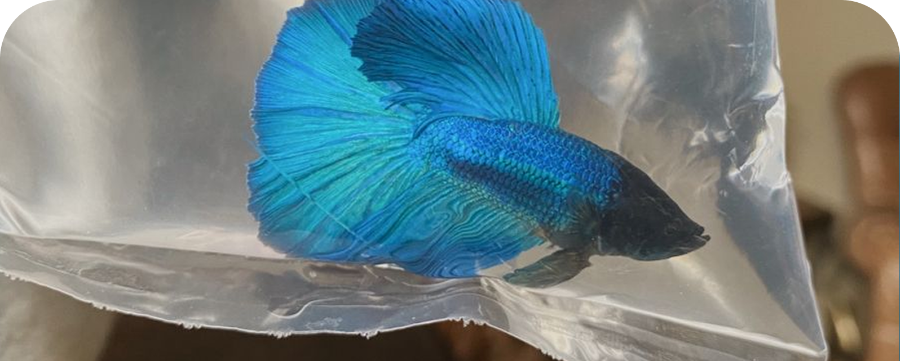

Etika Pemeliharaan

Memelihara ikan cupang bukan sekadar hobi atau dekorasi, tapi tanggung jawab menjaga kesejahteraan makhluk hidup. Ikan harus ditempatkan di lingkungan yang layak wadah cukup, air bersih, dan kondisi stabil. Mengandalkan anggapan "cupang kuat" untuk membenarkan kondisi buruk itu keliru.
Praktik yang merugikan seperti mengadu cupang seharusnya dihindari. Selain berisiko melukai, itu menunjukkan pemeliharaan yang tidak bertanggung jawab. Tujuan memelihara seharusnya menjaga, bukan mengeksploitasi.
Kebutuhan dasar seperti pakan, suhu, dan kualitas air harus dijaga konsisten. Memberi makan berlebihan atau membiarkan air kotor bukan kesalahan kecil—itu langsung berdampak ke kesehatan ikan.
Komitmen juga jadi bagian penting. Memelihara ikan tanpa kesiapan jangka panjang sering berujung penelantaran saat bosan. Ini bukan soal niat awal, tapi konsistensi dalam merawat. Pada akhirnya, etika pemeliharaan terlihat dari tindakan sehari-hari. Bukan harus sempurna, tapi cukup memastikan ikan hidup dengan kondisi yang layak dan terjaga.